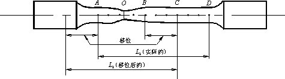

高温拉伸力学性能的实验定义和测定
1、 抗拉强度σb
拉伸过程中最大载荷与原始横截面积之比称为抗拉强度σb :
2、 断后伸长率δ
试样拉断后， 标距内的伸长与 原始标距L0的百分比称为断后伸长率δ：
其中， L1是试样断后标距，测量时将断后的试样按原样紧密对接在同一轴线上量取。 标距试样的断后伸长率通常附以试样标距数值的角注，例如：L0=100 mm 或 200mm 试样， 则分别以符号 δ100mm 或 δ200mm 表示。
图 1.3 断口移中示意图
3、 断面收缩率ψ
原始横截面积S0与断后最小横截面积S1之差除以原始截面积的百分率称为断面收缩率ψ：
颈缩处最小横截面积S1的测定，是在断口按原样沿同一轴线对接后， 在颈缩最小处两个相互垂直的方向上测量其直径，取两者的算术平均值计算。